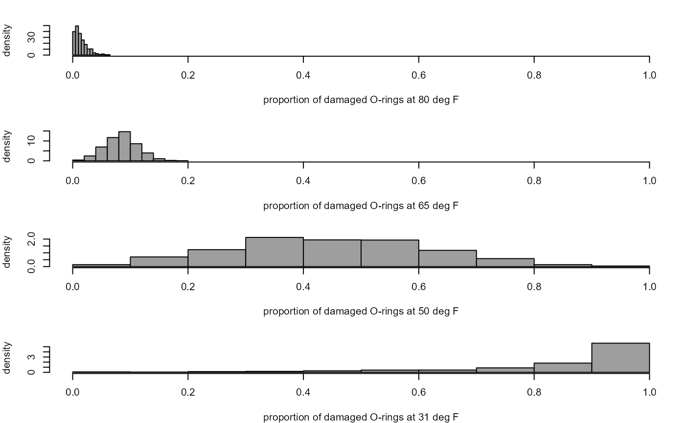

R/shuttle_sim.R
shuttle_sim_hists.RdIllustrates the uncertainty in the estimated probability of an O-ring suffering thermal distress for a given launch temperature.
shuttle_sim_hists(x, temps, ...)
| x | A 2-column matrix returned from a call to
|
|---|---|
| temps | A numeric vector of temperatures, in degrees Fahrenheit. |
| ... | Further arguments to be passed to |
Nothing, just the plot.
For details of the linear logistic model see
Challenger Space Shuttle Disaster
vignette and for simulation from this model see
shuttle_sim.
shuttle_sim_plot and shuttle_sim.
The Challenger Space Shuttle Disaster vignette.
x <- shuttle_sim_plot(n_sim = 1000, plot = FALSE) shuttle_sim_hists(x, temps = c(31, 50, 65, 80), col = 8)